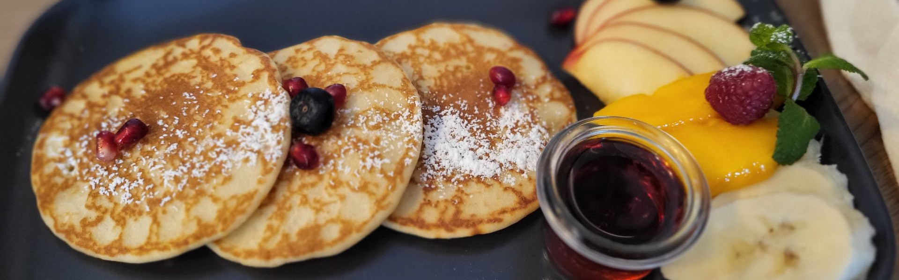
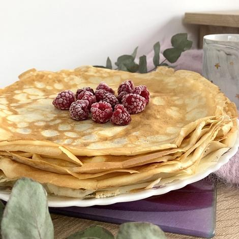
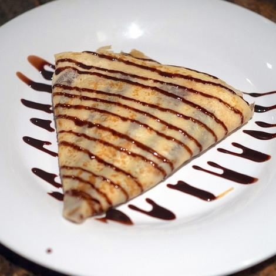
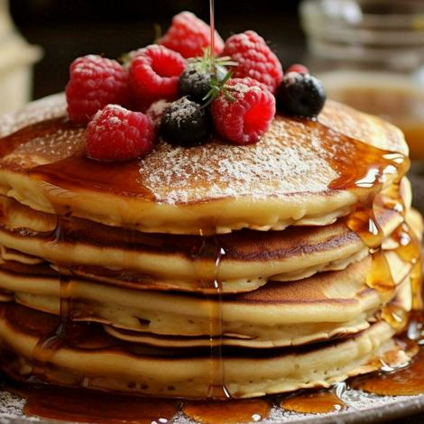
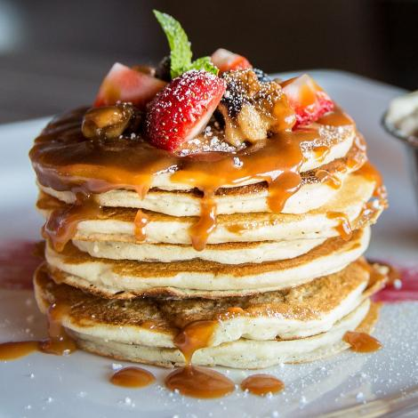

Enkelt recept på Pannkakor
Gör traditionella tunna pannkakor med detta enkla och goda pannkaksrecept.
- 1 dl vetemjöl
- 1/4 tsk salt
- 3 dl mjölk
- 1 ägg
- Smör (ill stekning)
- Sylt, bär eller frukt - till Servering
- Sirap eller ev choklad
Så här gör du
- Blanda mjöl och salt i en bunke.
- Vispa i hälften av mjölken och vispa till en söt smet
- Vispa i resten av mjölken och äggen
- Låt smeten vila i ca 10 minuter
- Stek tunna pannkakor i lite smör, för varje pannkaka,i en stek- eller pannkakspanna
- Servera med sylt, bär eller frukt
Serveringsförslag



